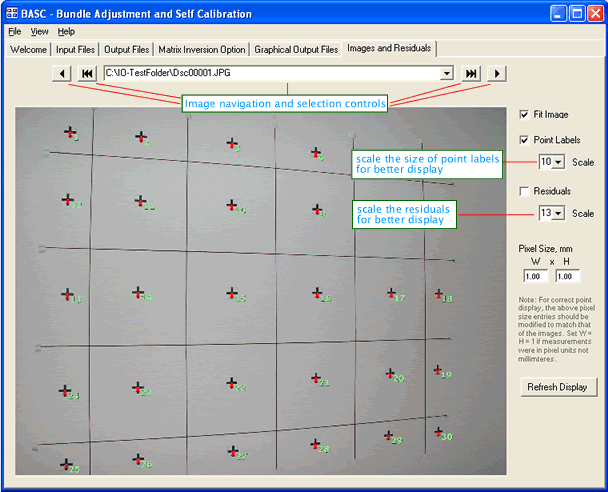

The program interface is intended to add user-friendliness to the execution process. The interface follows a classic hierarchy of input, processing, and output in addition to further processing functions. BASC interface is comprised of a command menu and a collection of tabs each containing the necessary controls for a specific task.

Performing a bundle adjustment:
1. Prepare the text input files as described in the Input Data section.
2. Start BASC either from the Start menu or from BASC group.
Start
menu |
BASC
program group |
Welcome tab:
The Welcome tab is the first to show with three buttons giving the following options:
-
Exiting the program,
-
Getting more help information, or
-
Proceeding to Input Files tab.
Input Files tab:
In the Input Files the input is supplied in the following order:
-
Select the working directory since this is the only enabled selection at this time.
-
Browse for and select the Project File name. This file is opened and its contents are displayed. Also the proper input filename fields are enabled based on the options set in the project file.
-
Now browse for and select all required input files. The filenames that remain disabled mean they are not needed. Note that you can click the file edit button to preview and make last minute modifications on these files.
Output Files tab:
In the Output Files one file name is needed to be input and the rest of the filenames are derived automatically by the program. When the calculations are finished, the file editing buttons will be enabled to view the contents of the results file.
Matrix Inversion Option tab:
BASC has the option of inverting matrices using different techniques. These methods have different implementation time and numerical sensitivity.
To start executing the calculations, click on Execute Bundle Adjustment button. Once the calculations are finished, view is returned automatically to the Output Files tab to enable the user view the output results. The graphical output results are viewed on the Graphical Output Files tab.
Graphical Output Files tab:
Switch to this tab to view the visual representation of the normal system and the parameter correlation matrix.
Images and Residuals tab:
This tab views the images that are involved in the adjustment procedure. Image files should be available in the working directory and have the same filenames (only filename without the full path) as appears in the *icf and *.ori files. After the calculations are done, the residuals can be also displayed and scaled.
